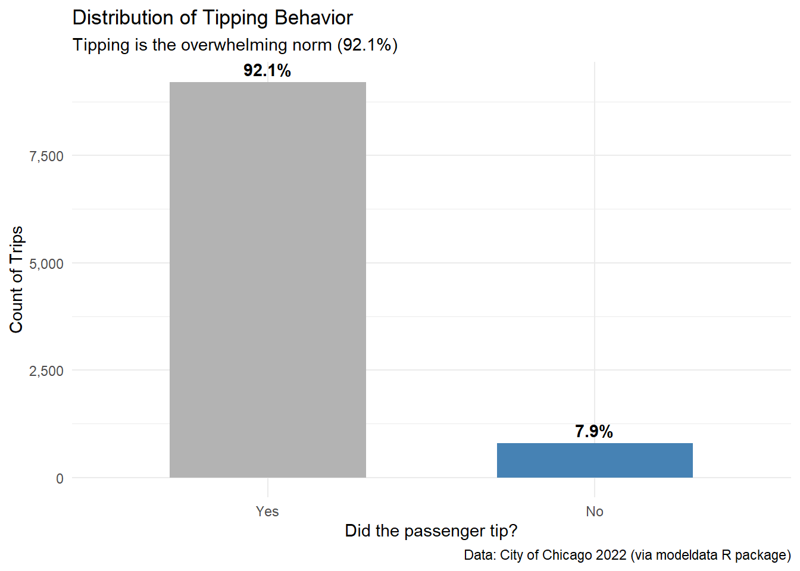

Code
library(tidyverse)
library(tidymodels)
library(scales)
library(skimr)Investigation into Chicago taxis
This report presents an exploratory data analysis (EDA) of Chicago taxi data. Leveraging the Tidyverse ecosystem and Tidymodels in R, the analysis focuses on visualizing and quantifying key factors that influence tipping, such as trip distance and company performance.

library(tidyverse)
library(tidymodels)
library(scales)
library(skimr)The dataset we will visualize is called taxi. Let’s glimpse() at it.
#Load data
data(taxi)
glimpse(taxi)Rows: 10,000
Columns: 7
$ tip <fct> yes, yes, yes, yes, yes, yes, yes, yes, yes, yes, yes, yes, y…
$ distance <dbl> 17.19, 0.88, 18.11, 20.70, 12.23, 0.94, 17.47, 17.67, 1.85, 1…
$ company <fct> Chicago Independents, City Service, other, Chicago Independen…
$ local <fct> no, yes, no, no, no, yes, no, no, no, no, no, no, no, yes, no…
$ dow <fct> Thu, Thu, Mon, Mon, Sun, Sat, Fri, Sun, Fri, Tue, Tue, Sun, W…
$ month <fct> Feb, Mar, Feb, Apr, Mar, Apr, Mar, Jan, Apr, Mar, Mar, Apr, A…
$ hour <int> 16, 8, 18, 8, 21, 23, 12, 6, 12, 14, 18, 11, 12, 19, 17, 13, …The data used in this report comprises a subset of taxi trips recorded in the city of Chicago during 2022. The dataset includes information on trip duration, location, and payment details, allowing for an analysis of factors influencing tipping behavior.
Key variables include trip distance, the specific taxi company, and temporal data (hour, day, month).
| Variable | Description |
|---|---|
tip |
Whether the rider left a tip. A factor with levels “yes” and “no”. |
distance |
The trip distance, in odometer miles. |
company |
The taxi company, as a factor. Companies with low frequency were binned as “other”. |
local |
Whether the trip’s starting and ending locations are in the same community. |
dow |
The day of the week in which the trip began (Factor). |
month |
The month in which the trip began (Factor). |
hour |
The hour of the day in which the trip began (Numeric). |
Before diving into specific questions, let’s examine the structure and integrity of the dataset.
# Complete summary of statistics and null values
skim_without_charts(taxi)| Name | taxi |
| Number of rows | 10000 |
| Number of columns | 7 |
| _______________________ | |
| Column type frequency: | |
| factor | 5 |
| numeric | 2 |
| ________________________ | |
| Group variables | None |
Variable type: factor
| skim_variable | n_missing | complete_rate | ordered | n_unique | top_counts |
|---|---|---|---|---|---|
| tip | 0 | 1 | FALSE | 2 | yes: 9209, no: 791 |
| company | 0 | 1 | FALSE | 7 | oth: 2715, Tax: 1694, Sun: 1382, Tax: 1231 |
| local | 0 | 1 | FALSE | 2 | no: 8117, yes: 1883 |
| dow | 0 | 1 | FALSE | 7 | Thu: 1958, Wed: 1746, Tue: 1628, Fri: 1571 |
| month | 0 | 1 | FALSE | 4 | Apr: 3178, Mar: 3142, Feb: 2036, Jan: 1644 |
Variable type: numeric
| skim_variable | n_missing | complete_rate | mean | sd | p0 | p25 | p50 | p75 | p100 |
|---|---|---|---|---|---|---|---|---|---|
| distance | 0 | 1 | 6.22 | 7.38 | 0 | 0.94 | 1.78 | 15.56 | 42.3 |
| hour | 0 | 1 | 14.18 | 4.36 | 0 | 11.00 | 15.00 | 18.00 | 23.0 |
The summary statistics above reveal a clean and well-structured dataset with zero missing values across all variables, ensuring that no imputation is required for this analysis.
Key observations include:
tip is highly unbalanced, with the vast majority of passengers (9,209 out of 10,000) opting to leave a tip.company variable has a significant number of observations categorized as “other” (2,715), suggesting a fragmented market with many smaller operators alongside major ones like Sun Taxi and Taxi Affiliation Services.#|label: tip-col_chart
#| echo: true
# Bar chart to see the proportion of tips
taxi %>%
count(tip) %>%
mutate(
percentage = n / sum(n),
label = scales::percent(percentage, accuracy = 0.1)
) %>%
ggplot(aes(x = tip, y = n, fill = tip)) +
geom_col(width = 0.6) +
geom_text(aes(label = label), vjust = -0.5, fontface = "bold") +
scale_y_continuous(labels = scales::comma) +
scale_x_discrete(labels = str_to_title) +
scale_fill_manual(values = c("gray70", "steelblue")) +
labs(
title = "Distribution of Tipping Behavior",
subtitle = "Tipping is the overwhelming norm (92.1%)",
x = "Did the passenger tip?",
y = "Count of Trips",
caption = "Data: City of Chicago 2022 (via modeldata R package)"
) +
theme_minimal() +
theme(legend.position = "none")
# Histogram with logarithmic scale to handle bias
ggplot(taxi, aes(x = distance)) +
geom_histogram(bins = 30, fill = "midnightblue", color = "white", alpha = 0.8) +
scale_x_log10(labels = scales::label_number(suffix = " mi")) +
labs(
title = "Distribution of Trip Distances",
subtitle = "Most trips are short (under 2 miles), with a long tail of outliers",
x = "Distance (Log Scale)",
y = "Frequency",
caption = "Data: City of Chicago 2022 (via modeldata R package)"
) +
theme_minimal()
Is there there a relationship between the distance (in miles) someone travels in a taxi and if they tip or not?
# 1. Boxplot
ggplot(taxi, aes(x = tip, y = distance, fill = tip)) +
geom_boxplot(alpha = 0.8, outlier.size = 1) +
scale_y_continuous(
labels = scales::label_number(suffix = " mi"),
breaks = seq(0, 50, 5)
) +
scale_x_discrete(labels = str_to_title) +
scale_fill_manual(values = c("gray70", "steelblue")) +
labs(
title = "Relationship between Trip Distance and Tipping",
subtitle = "Trips with tips tend to be slightly longer on average",
x = "Did the passenger tip?",
y = "Trip Distance",
caption = "Data: City of Chicago 2022 (via modeldata R package)"
) +
theme_minimal() +
theme(
legend.position = "none",
panel.grid.major.x = element_blank()
)
# 2. Data Evidence
taxi %>%
group_by(tip) %>%
summarise(
count = n(),
avg_dist = mean(distance, na.rm = TRUE),
p25_dist = quantile(distance, 0.25, na.rm = TRUE),
median_dist = median(distance, na.rm = TRUE),
p75_dist = quantile(distance, 0.75, na.rm = TRUE)
) |>
knitr::kable(
col.names = c("Tip?", "Total Trips", "Mean Dist", "25th %", "Median", "75th %"),
digits = 2,
align = "c",
caption = "Distance Statistics by Tipping Status"
)| Tip? | Total Trips | Mean Dist | 25th % | Median | 75th % |
|---|---|---|---|---|---|
| yes | 9209 | 6.37 | 0.96 | 1.79 | 16.39 |
| no | 791 | 4.57 | 0.79 | 1.66 | 6.26 |
Analysis:
The data reveals a clear behavioral split based on trip length:
Conclusion: While short trips are a toss-up, long-distance passengers are consistently more reliable tippers. Drivers accepting long fares face a much lower risk of not being tipped.
Do taxi passengers tend to tip more for the company Chicago Independents than the other companies?